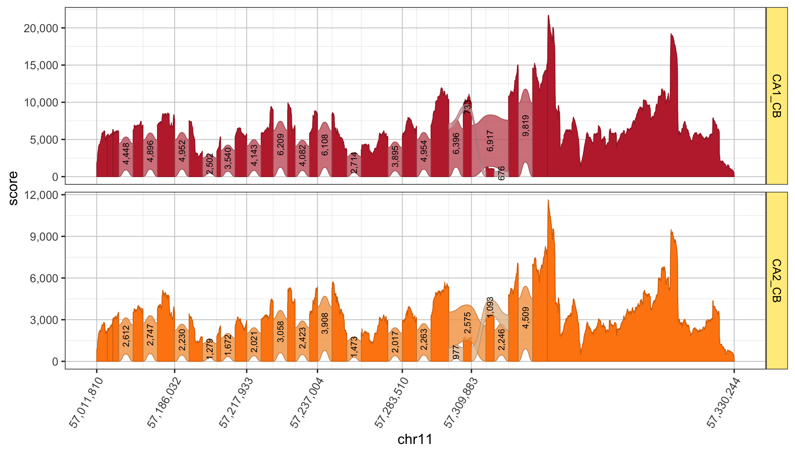
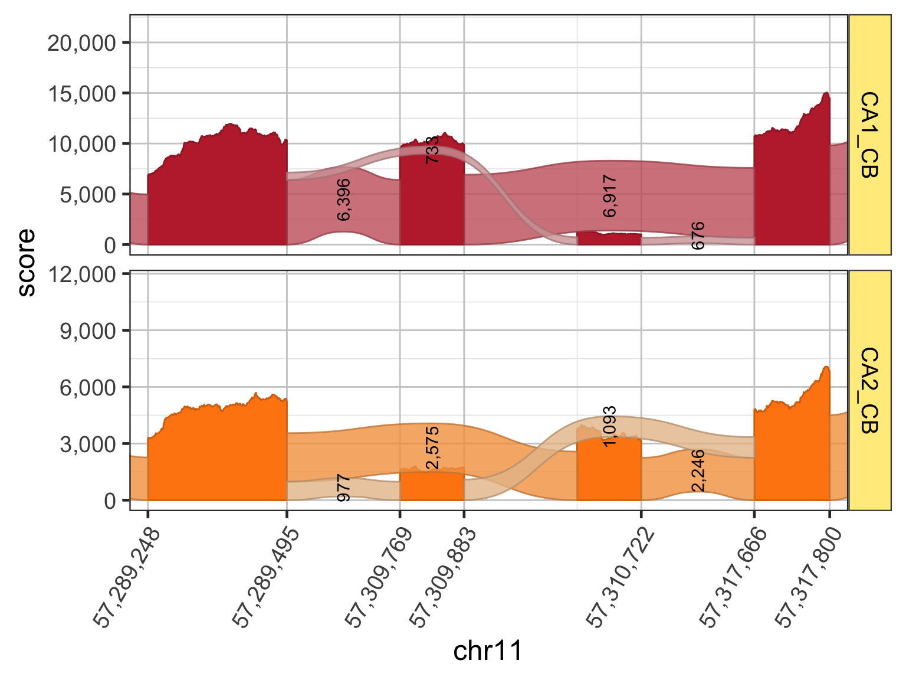

Splicejam was created to analyze and visualize RNA-seq and transcript isoform splicing data. Splicejam aims to provide sashimi plots with enough customizations to support publication-quality figures.
An example sashimi plot is shown below for the gene Gria1. Each panel shows transcript expression in a region of mouse hippocampus, where “CA1_CB” shows data that originated from cell bodies of CA1, and “CA2_CB” shows corresponding data from cell bodies of CA2.

The x-axis range is adjusted in the following plot to show more detail around the differentially spliced exons. Notice the relative heights of the exons differ across CA1 and CA2, consistent with the corresponding changes in splice junctions. Clearly CA1 and CA2 favor different and mutually exclusive exons for Gria1.

Incidentally, these two isoforms of Gria1 represent the “flop” and “flip” forms of the AMPA receptor complex. In human, the genes Gria2, Gria3, and Gria4 comprise the AMPA receptor complex, and each genes has two isoforms with “flop” and “flip” designations.
A full online function reference is available via the pkgdown documentation:
Full splicejam command reference: https://jmw86069.github.io/splicejam
The splicejam package is part of a suite of R packages called “jampack” which is available through GitHub, see https://github.com/jmw86069/jampack
Sashimi plots were originally envisioned by MISO, which introduced the innovative idea to compress intron width in order to reveal the detailed exon sequence coverage, and to highlight changes in splice junctions.
Katz, Y, Wang ET, Silterra J, Schwartz S, Wong B, Thorvaldsdóttir H, Robinson JT, Mesirov JP, Airoldi EM, Burge, CB. Sashimi plots: Quantitative visualization of alternative isoform expression from RNA-seq data. http://biorxiv.org/content/early/2014/02/11/002576
Splicejam re-envisions classic sashimi plots by displaying splice junctions as wide arcs proportional in size to the number of junction reads, making them directly comparable to exon coverages on the same plot. Inspired by:
These ribbons were ultimately made feasible to implement in R thanks to the package ggforce which implemented geom_diagonal_wide.